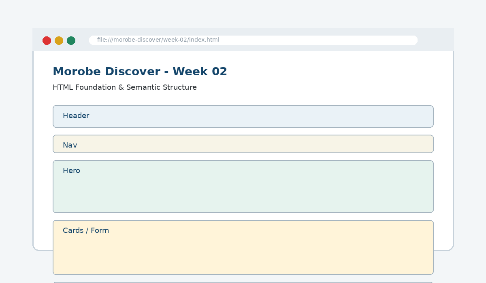

HTML Foundation & Semantic Structure
Create meaningful page regions and build web pages using appropriate structural elements.

How this week's learning connects
1. Reading
Build the conceptual foundation and vocabulary for HTML Foundation & Semantic Structure.
2. Lecture
Inspect the core principle, code patterns and visible browser result.
3. Lab
Complete the guided build tasks with checkpoints, testing and Git evidence.
4. Morobe Discover
Integrate the result into the same project and preserve earlier features.
Document shell
Provides the page with a valid HTML base.
Semantic elements
Name page regions by purpose rather than appearance.
Heading order
Creates a logical document outline for users and assistive technology.
Read the code line by line
<header>
<h1>Morobe Discover</h1>
</header>
<nav>...</nav>
<main>...</main>
<footer>...</footer><section class="hero">
<h2>Discover Morobe</h2>
<p>Find destinations, events and trip ideas.</p>
</section>What it does → Why it works → Where we use it
<header>
Identifies introductory content for the page or section.<nav>
Groups the primary navigation links.<main>
Contains the page's unique primary content; normally one main per page.<footer>
Contains closing information such as project or contact details.
Project connection: This code belongs to the Week 02 Morobe Discover increment and should produce a visible or testable change related to Semantic homepage and planned page regions.
Editable browser playground
Modify the example, run it, break it deliberately, and reset it. The preview is isolated from the course page.
Morobe Discover tasks
- Create the HTML document shell
- Add title and metadata
- Translate wireframe regions into semantic elements
- Add navigation links and headings
- Add placeholder content for hero, cards and footer
Checkpoint tests
Morobe Discover — Week 02
This is the actual source project increment supplied for this week.
Check your understanding
Knowing the definition is not enough
A weak submission can define HTML Foundation & Semantic Structure but cannot point to the exact Morobe Discover file, code line and browser result. During code defence, be ready to connect code → visible behaviour → user reason → test evidence.
Prepare the next checkpoint
Week 03 adds user data collection through forms and starts visual hierarchy rules.